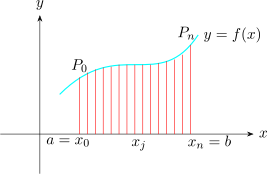
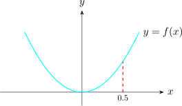

3.11 The Length of a Plane Curve
Suppose the curve over the closed interval \([a,b]\) is given by \(y = f(x)\). Let
\(a = x_0 < x_1 < \cdots \cdots \cdots < x_n = b\) be a partition of the interval \([a,b]\). Let \(P_j\) be the point on the curve whose coordinates are \((x_j , f(x_j))\) and let \(S_n\)
be the polygonal path obtained by joining the points \(P_j, \hspace {0.2cm} j = 0, 1, 2,\cdots \cdots \cdots , n\) by straight line segments on the
curve.

If we let \(\max \Delta x_j \longrightarrow 0\), the polygonal path \(S_n\) is almost a smooth curve. Thus, the length \(S\) of a smooth curve \(y = f(x)\) from \(x = a\) to \(x = b\) is approximately \[S \approx \lim \limits _{\max \Delta x_j\rightarrow 0} \sum ^n_{j=1} \sqrt {\big (x_j - x_{j-1}\big )^2 + \big (f(x_j)- f(x_{j-1})\big )^2}\]
If \(f(x)\) is continuous in \((a,b)\), then by the mean value theorem there exist \(x^*_j \in \big (x_{j-1}, x_j\big ) \ni f(x_j) - f(x_{j-1}) = f'(x_j)\big (x_j - x_{j-1}\big )\)
\[ S = \int ^b_a \sqrt {1 + \Big [f'(x)\Big ]^2}\hspace {0.2cm}dx\] Which is the arc length formula.
Solution.

\(\displaystyle {\dfrac {dy}{dx} = 2x \hspace {0.5cm} \implies \hspace {0.5cm} \sqrt {1 + \Bigg (\dfrac {dy}{dx}\Bigg )^2 } = \sqrt {1 + 4x^2}}\hspace {0.4cm}\) Thus
\[S = \int ^{0.5}_0 \sqrt {1 + 4x^2}\hspace {0.1cm} dx = 2\int ^{0.5}_0 \sqrt {\dfrac {1}{4} + x^2}\hspace {0.2cm} dx\]
Let \(\hspace {0.2cm} x = \dfrac {1}{2}\tan \theta \hspace {0.2cm}\) so that \(\hspace {0.2cm} dx = \dfrac {1}{2}\sec ^2\theta d \theta \)
\begin {align*} \implies \hspace {0.5cm} S & = 2\int \sqrt {\dfrac {1}{4} + \dfrac {1}{4}\tan ^2\theta }\cdot \dfrac {1}{2}\sec ^2\theta \hspace {0.1cm}d\theta \\\\ & = \dfrac {1}{2}\int _0^{\dfrac {\pi }{4}}\sqrt {1 + \tan ^2\theta }\cdot \sec ^2\theta \hspace {0.1cm}d\theta \\\\ & = \dfrac {1}{2}\int _0^{\dfrac {\pi }{4}} \sec ^3\theta \hspace {0.1cm}d\theta \\ \end {align*}
\[\int \sec ^3\theta \hspace {0.1cm}d\theta = \dfrac {1}{2}\Big [\sec \theta \tan \theta + \ln |\sec \theta + \tan \theta | \Big ]\]
\begin {align*} \implies \hspace {0.5cm} S & = \dfrac {1}{2}\Bigg [\dfrac {1}{2}\Big [\sec \theta \tan \theta + \ln |\sec \theta + \tan \theta |\Big ] \Bigg ]^{\dfrac {\pi }{4}}_0\\ & = \dfrac {1}{4}\Big [\sqrt {2} + \ln \Big |1 + \sqrt {2}\Big |\Big ]\\ \end {align*}
It can also be shown that the length of an arc whose equation is given in parametric form \(x = f(t)\) and \(y = g(t)\) for \(t_1 \leq t \leq t_2\) is given by \[S = \int ^{t_2}_{t_1} \sqrt {\Big [f'(t)\Big ]^2 + \Big [g'(t)\Big ]^2}\hspace {0.2cm} dt\]
Find the length of the arc defined parametricaly by \(x = \ln \sqrt {1 + t^2}\hspace {0.2cm}, \hspace {0.3cm} y = \tan ^{-1}t\hspace {0.2cm}\) from \(t = 0\) to \(t = 1\)
Solution. \[f'(t) = \dfrac {dx}{dt} = \dfrac {1}{\sqrt {1 + t^2}}\cdot \Big (1 + t^2\Big )^{-1/2}\cdot t= \frac {t}{1 + t^2}\]
\[g'(t) = \dfrac {dy}{dt} = \frac {1}{1 + t^2}\]
\[\implies \hspace {0.5cm} \Big [f'(t)\Big ]^2 + \Big [g'(t)\Big ]^2 = \Bigg (\dfrac {t}{1 + t^2}\Bigg )+ \Bigg (\dfrac {t}{1 + t^2}\Bigg ) = \frac {t^2 + 1}{\Big (1 + t^2\Big )^2} = \dfrac {1}{1 + t^2}\]
\[\sqrt {\Big [f'(t)\Big ]^2 + \Big [g'(t)\Big ]^2} = \sqrt {\dfrac {1}{1 + t^2}} = \dfrac {1}{\sqrt {1 + t^2}}\]
\[\implies \hspace {0.5cm} S = \int ^1_0 \dfrac {1}{\sqrt {1 + t^2}}dt\]
Let \(\hspace {0.2cm} t = \tan \theta \hspace {0.2cm}\) so that \(\hspace {0.2cm} dt = \sec ^2\theta d\theta \)
\begin {align*} \implies \hspace {0.5cm} S & = \int ^{\dfrac {\pi }{4}}_0 \dfrac {1}{\sqrt {1 + \tan ^2\theta }}\cdot \sec ^2\theta \hspace {0.1cm}d\theta \\ & = \int ^{\dfrac {\pi }{4}}_0\sec \theta \hspace {0.2cm}d\theta \\ & = \ln \left |\sec \theta + \tan \theta \right |\Bigg ]_0^{\dfrac {\pi }{4}}\\ & = \ln \left |\sqrt {2} + 1\right |\\\\ \end {align*}
Questions on this section
Stuck on something here? Ask below and it stays attached to this topic.